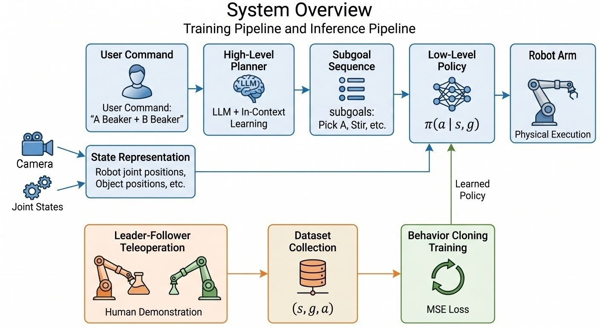
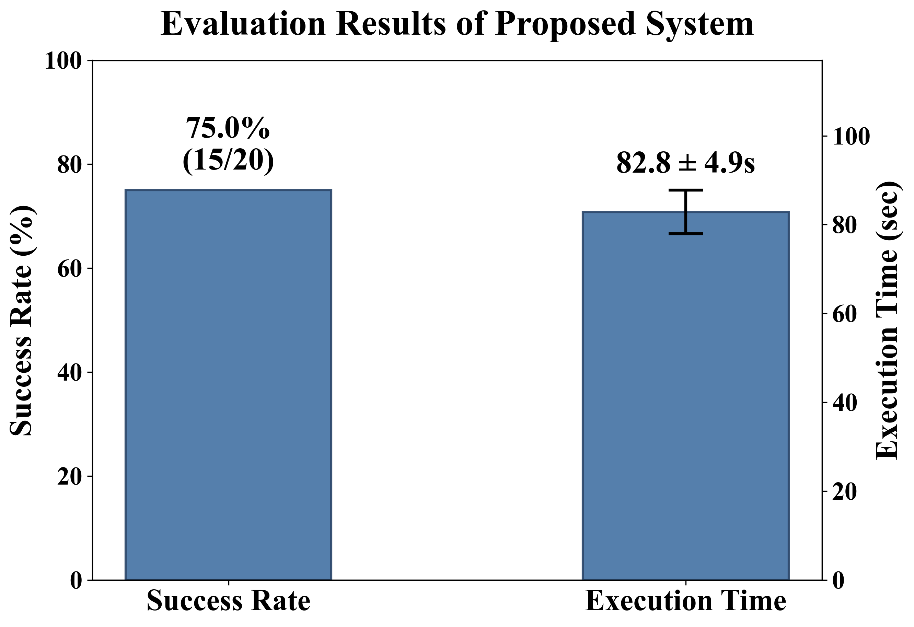

Summary
We present HSG-BC, a hierarchical framework for laboratory robot manipulation. The system separates high-level task reasoning from low-level robot control: an LLM planner converts natural-language instructions into structured subgoals, while a subgoal-conditioned low-level policy predicts robot actions from the current robot state and visual object information. We instantiate the framework on an SO-101 robot arm for beaker and stirring-tool manipulation.
Hierarchical Planning
The LLM planner converts user commands into a structured reference subgoal schema for laboratory manipulation tasks.
Demonstration Learning
Human demonstrations are collected through leader-follower teleoperation and used to train an MLP behavior cloning policy.
Physical Manipulation
The policy is designed for SO-101 robot arm execution, focusing on real-world physical interaction rather than simulation-only evaluation.
System Overview
The overall system consists of two connected pipelines: a training pipeline that builds a human demonstration dataset, and an inference pipeline that executes LLM-generated subgoals using a learned low-level policy.

Method
We define the proposed method as HSG-BC, a hierarchical subgoal-guided behavior cloning framework. The high-level planner generates a subgoal sequence, while the low-level policy predicts robot actions conditioned on the current state and subgoal.
High-Level Planner
- Input: natural-language task instruction.
- Output: a sequence of structured subgoals.
- Implementation: LLM with in-context learning.
- Role: converts a long-horizon task into executable subgoal steps.
Low-Level Policy
- Policy:
π(a_t | s_t, g_t) - Input: SO-101 joint state, vision feature, and subgoal label.
- Output: joint-level robot action.
- Training: MLP behavior cloning with demonstration data.
Reference Subgoal Schema
We describe high-level plans using a reference subgoal schema: a reusable template that specifies the intended manipulation flow with roles such as source object, target object, and tool object. In our SO-101 demonstration, the source object is instantiated as beaker A, the target as beaker B, and the tool as the stirring stick.
- Move to source object
- Pick source object
- Move source to target
- Pour source into target
- Move source back
- Release source object
- Move to tool object
- Pick tool object
- Move tool to target
- Stir target
- Move tool back
- Release tool object
Human Demonstration Dataset
Demonstrations are collected through leader-follower teleoperation. At each timestep, we record the robot state, the current subgoal label, and the corresponding action.
State
- SO-101 joint positions
- Gripper state
- Vision-based object information
Subgoal
- 12-step reference subgoal schema encoded as a one-hot vector
- Segmented from demonstration timestamps
- Conditioning input for the policy
Action
- Joint-level control action
- Recorded from LeRobot teleoperation
- Used as behavior cloning target
Evaluation Results
We evaluate the proposed system over 20 trials with slight object-position perturbations. A trial is considered successful when the required subgoal sequence is completed in order.
(15 / 20 trials)
Robot Execution Evaluation

LLM Planner Evaluation

Analysis and Failure Cases
Test Setting
- 20 repeated trials
- Slight perturbation of object positions
- Fixed reference subgoal schema
Main Observation
- Stable execution time across trials
- Subgoal conditioning helps structure long-horizon behavior
- Replay confirms the overall task flow
Failure Cases
- Grasp error under position shifts
- Spilling during pouring
- Stirring position mismatch
Demo Video
The demonstration video shows the replay or execution of the subgoal-guided manipulation pipeline.